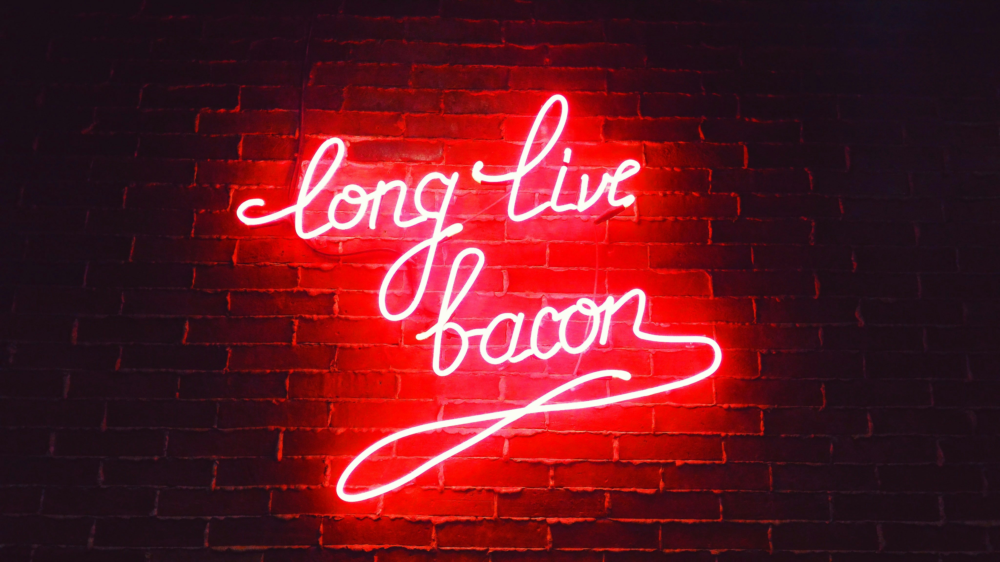
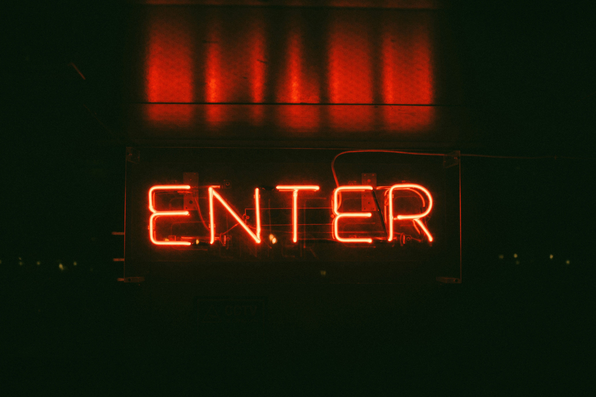
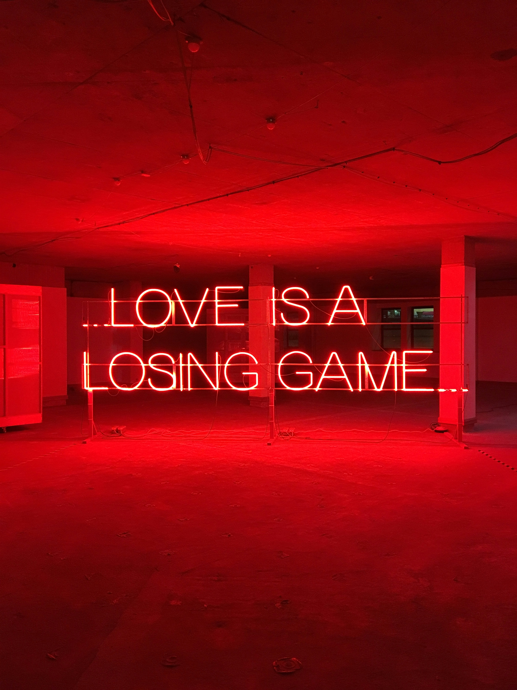
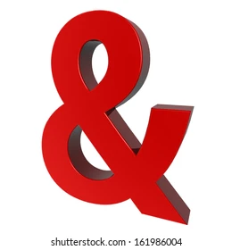
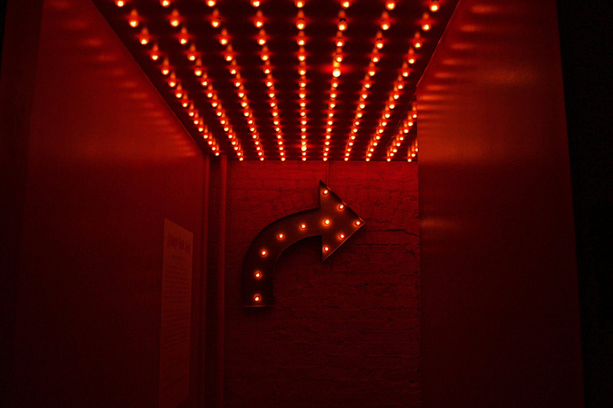
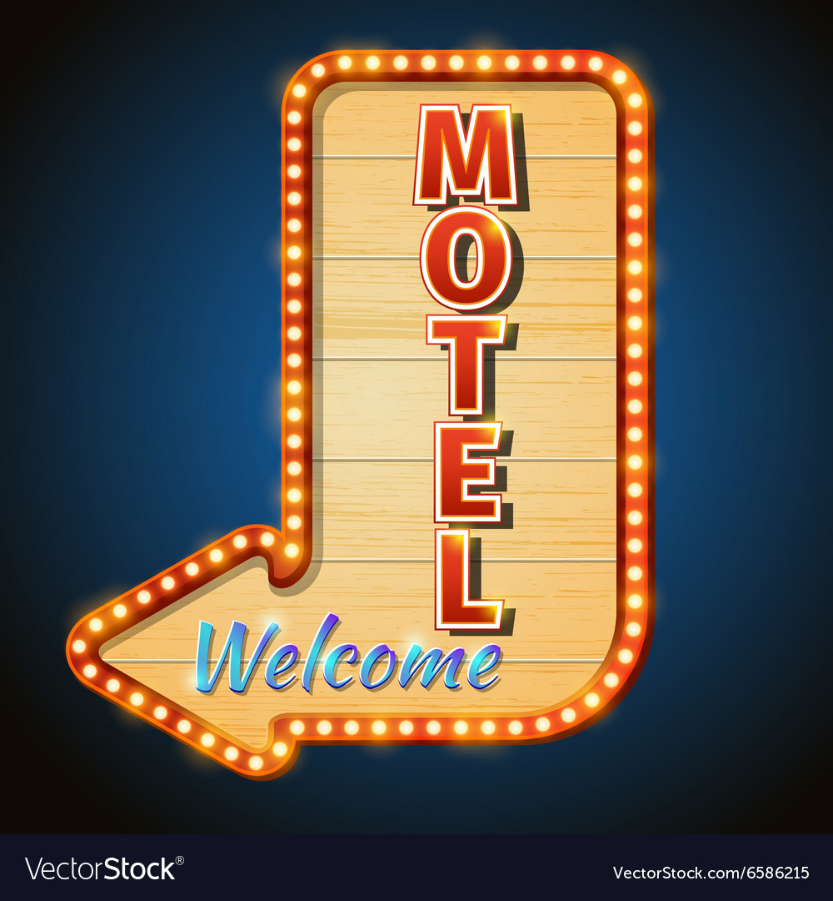

I Saw The Sign
and it opened up my eyes.One of my favourite things to do is to capture the amarican notalgia of sign age.they tell us where we're going or where we've been.They express a mode or saying can even just be a shape.But it's the vintage,neon and big light bulbed signs that say so much more.They aren't just your average square shapes with letters on it.Some actual thought and planning went in to the making of the sign. Oh and the lost are of advertising with neon signs that display motion always a fun find! Such a lost art in my opinion.LED just hurts my-doesn't it?

  
Neon on Bricks Classic enter Sign Message in garage
  & your point Which way? Vintage big bulbed motel sign